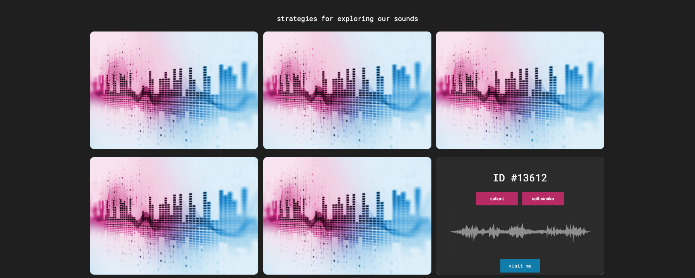

I've always believed that each one of us has our own sonic signature; that a critical examination of the enacted and sub-conscious soundscapes that scaffold our daily lives would surface the experiences that sum to our personalities -- the scenes of our childhoods, the societal hats we rotate through, the relationships that we hold dear. In this semester's Arts@ML class taught by Prof. Tod Machover, I've tried to consider these ideas in greater detail. And while my dissertation work has entailed attempting to deconstruct this idea across large groups of people constrained by shared notions of sound perception, this class and its wonderful participants have pushed me to pause, and to reflect experientially on the sounds with which I have the most unassuming yet intimate relationship -- my own.
While my final project started with a lofty aim to study the relationship between global circumstances and user listening preferences, Prof. Tod, the TAs, and the class nudged me to treat my own listening choices as a micro-universe that might inspire an experience designed to facilitate reflection and growth. Armed with data representing my listening history from Spotify over the past 1 year, I began to build a set of tools to slice and dice the data. I decided to dive deeper into the simple network representation shown below, as I thought it had the potential to tell a story. To design this visual, I considered my listening history for a single month (any more time and the plot was much too dense to explore), and computed an affinity matrix where the distance between every pair of tracks was given by the combination of (1) the delta in time of play over the course of a day; and (2) the rank order-weighted intersection score of the tracks' related/ recommended artists. I used a simple spectral clustering approach (dimensionality reduction by computing the eigenvector of the laplacian matrix and projecting, followed by K-Means) to separate out groups of "related" tracks in time of play/ related artist space, and colored each node by its degree in the affinity matrix. One example result is shown below -- feel free to click around!
A few little insights that made me smile:As a demo, I thought I'd attempt a way to share a piece of my personality embedded in my music with my peers in the class. I began by drawing a contour that moved through the "clouds", and adapted some tools that I have been building for my research work to compute audio feature curves for the tracks adjacent to the contour. Using this to help me find regions of the tracks that might be related musically, I manually assembled a short passage to accompany the contour. An audio sample of a few distinct listening "clouds" and the contour passage can be heard in the demo:
There are so many ways in which this project could go further, and it is very much a first experiment with sizeable Wizard-of-Oz-ary. Apart from building some front-end skills, putting this demo together gave me a chance to spend time with my music in an intellectual yet nostalgic way. A comment from another student summed it up pretty well, I think. "It made me miss home."Here are a few other projects I worked on as a part of the class, for the sake of posterity.
A 1-minute sound piece that explores the rich and colorful boundaries that the Indian-American experience often entails traversing:
A demo of my Audio Summarization project applied to sounds from all over the world; depending on how you "look" at it, maybe our sounds are more or less similar than we might think. Click the image for a demo.
To Prof. Tod and all of the talented and creative class participants, thank you for such an inspiring semester!